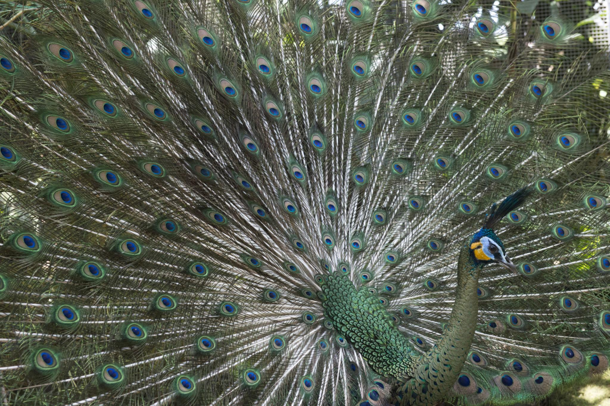

🌎 País de origen
Isla de Java y Sudeste Asiático
📖 Historia
Es una subespecie del pavo real verde, originaria de Indonesia. Es muy apreciada por su belleza y está en peligro en estado silvestre por pérdida de hábitat.
✨ Datos curiosos
- Es más grande y estilizado que el pavo real común.
- Está en estado de conservación vulnerable.
📸 Ejemplares de nuestra granja


⭐ Calificación de visitantes
⭐⭐⭐⭐⭐
Esta especie es una de las favoritas de los visitantes de La Granja de Gregori.